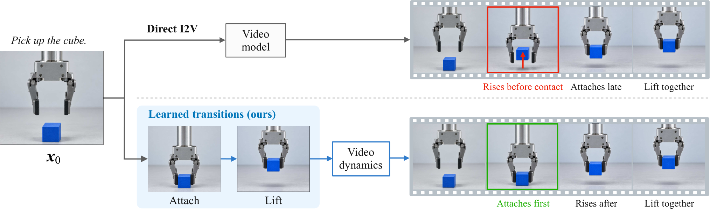
STRIKE: Learning Visual State Transitions for Physical World Modeling
Predict scene changes through learned visual state transitions, then generate the intervening video.
I’m a Research Engineer at Applied Intuition in Sunnyvale, California, developing neural simulation for autonomous driving and robotics. My research spans 3D reconstruction, neural rendering and world models, including appearance transfer and scene modeling across repeated traversals.
I build scene representations for closed-loop training and evaluation of driving models, simulation-ready robotics assets, and world action model pretraining. I also mentor PhD research interns.
I completed an industrial PhD at Huawei Noah’s Ark Lab with ICB (CNRS / Université Bourgogne Europe) in 2025, working on targetless sensor calibration with dense differentiable rendering. Before that, I earned a diplôme d’ingénieur from ENSEEIHT in Toulouse and a research master’s degree, spent an exchange semester at National Taiwan University, and worked on active learning at IPAL (NUS / CNRS) in Singapore.
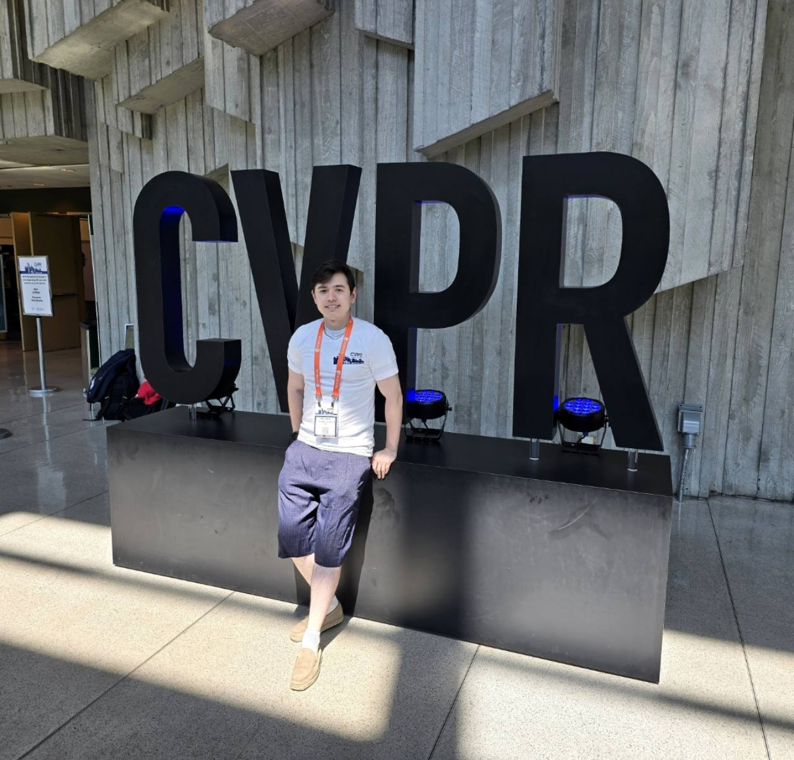

Predict scene changes through learned visual state transitions, then generate the intervening video.
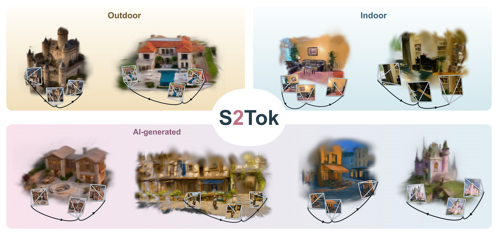
Maintain persistent spatial tokens as new images arrive, then decode them into 3D Gaussians.
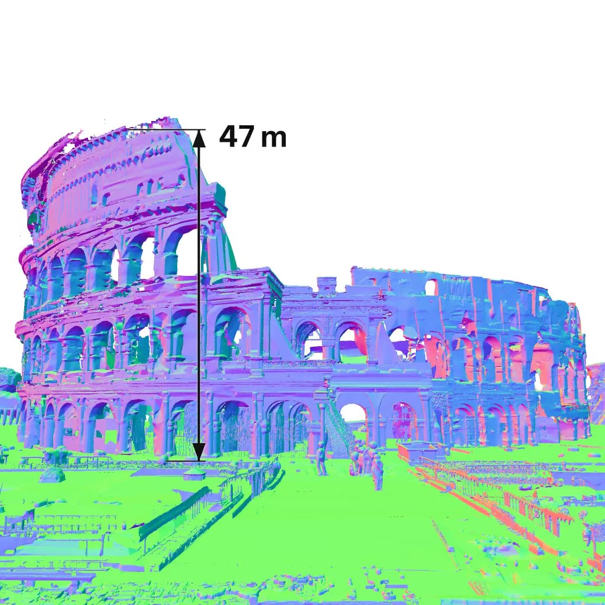
Generate complete indoor and outdoor scene meshes from one image using adaptive spatial chunks.
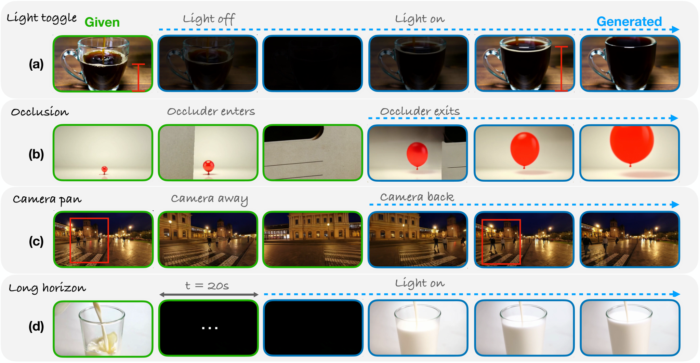
Video generation with memory that tracks how hidden states evolve through interruptions.
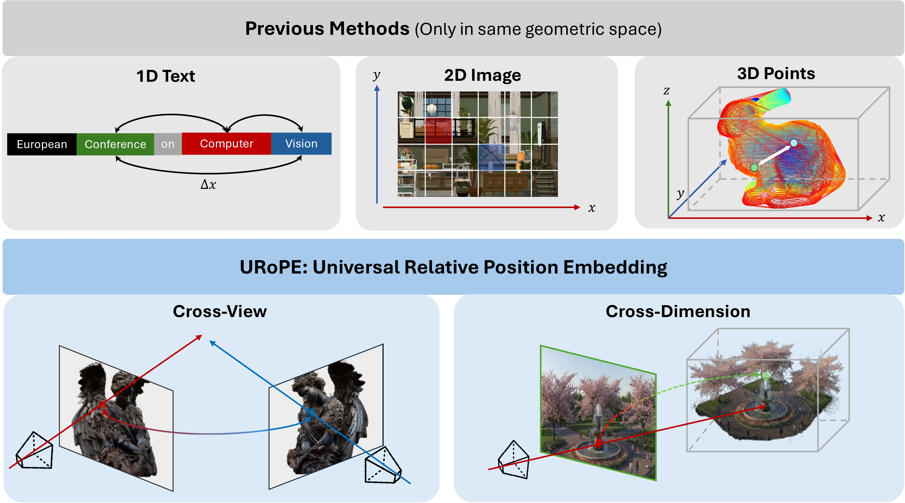
Relative position encoding that connects image tokens through camera geometry.
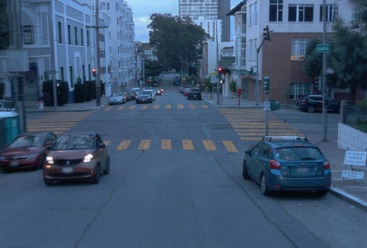
Separate geometry and appearance to transfer lighting across reconstructed driving scenes.
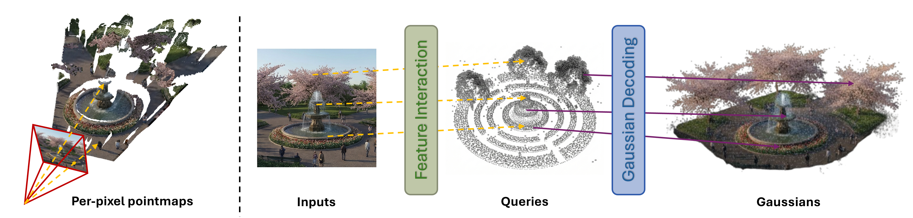
Reconstruct scenes from unposed images using sparse 3D queries that generate Gaussians.
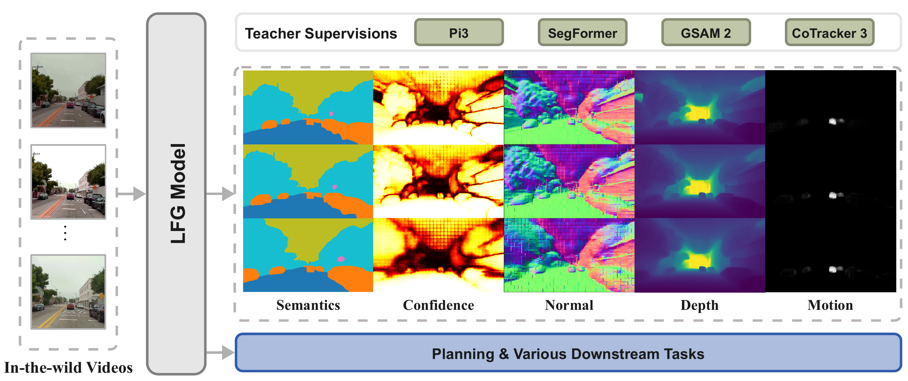
Learn geometry, semantics and motion for driving directly from unposed video.
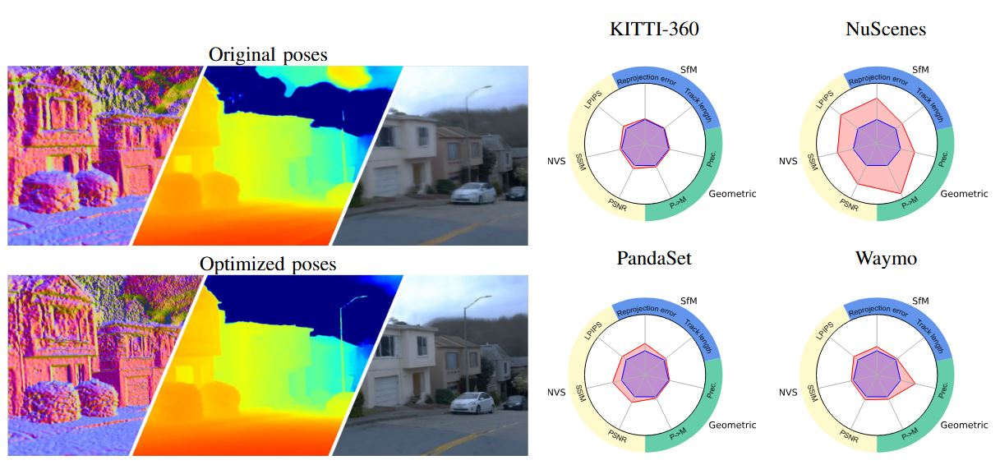
Refine sensor calibration and ego-trajectories, and assess pose quality through complementary measurements.
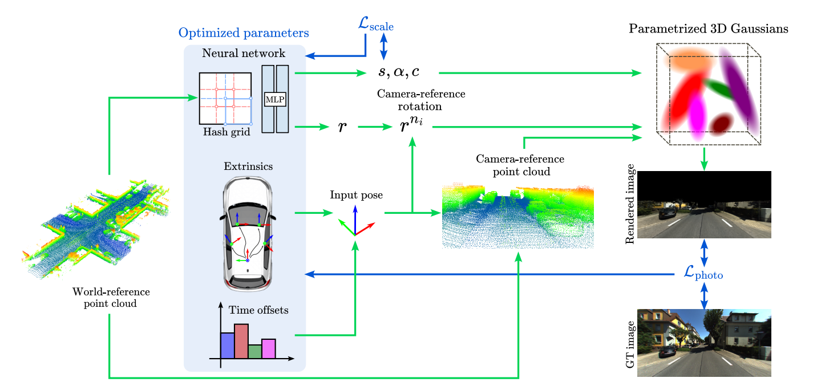
Use differentiable Gaussian rendering anchored to LiDAR geometry to calibrate cameras.
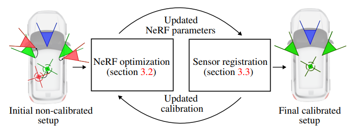
Calibrate a multi-sensor rig using camera-specific neural fields and shared scene visibility.
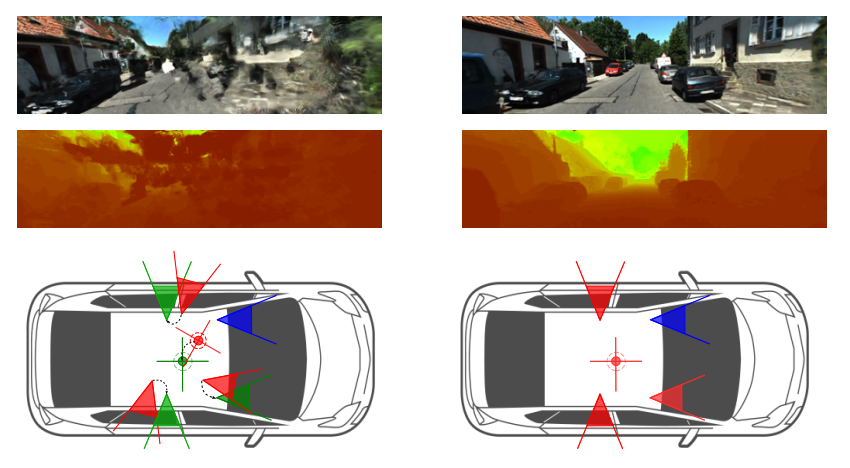
Jointly optimize a shared neural scene and the spatial and temporal alignment of cameras and LiDAR.
Reviewer for IROS (2023–2026), RA-L, IV (2025), NeurIPS (2025–2026), ECCV (2026) and ICLR (2027).
Outside research, I enjoy game design, oenology, cooking and working out.